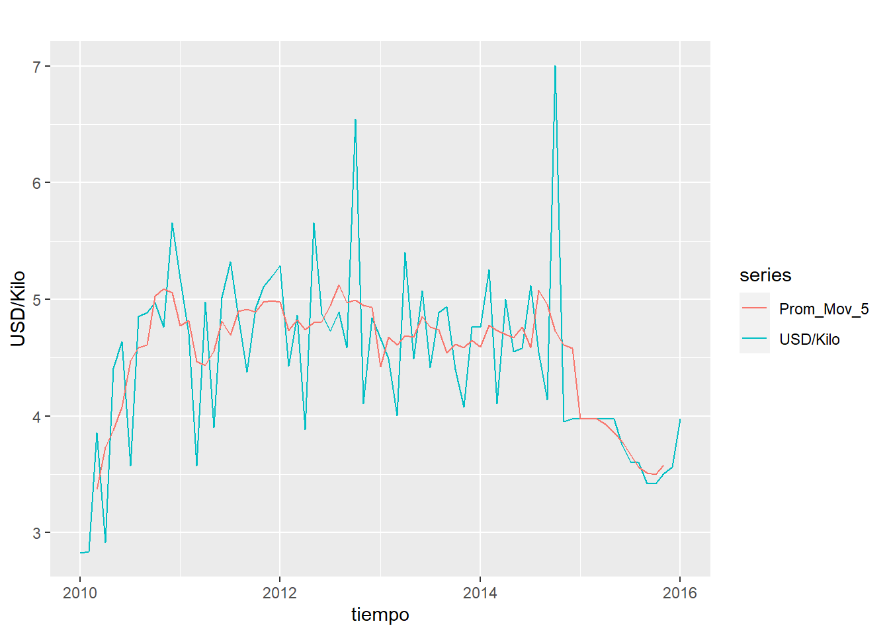
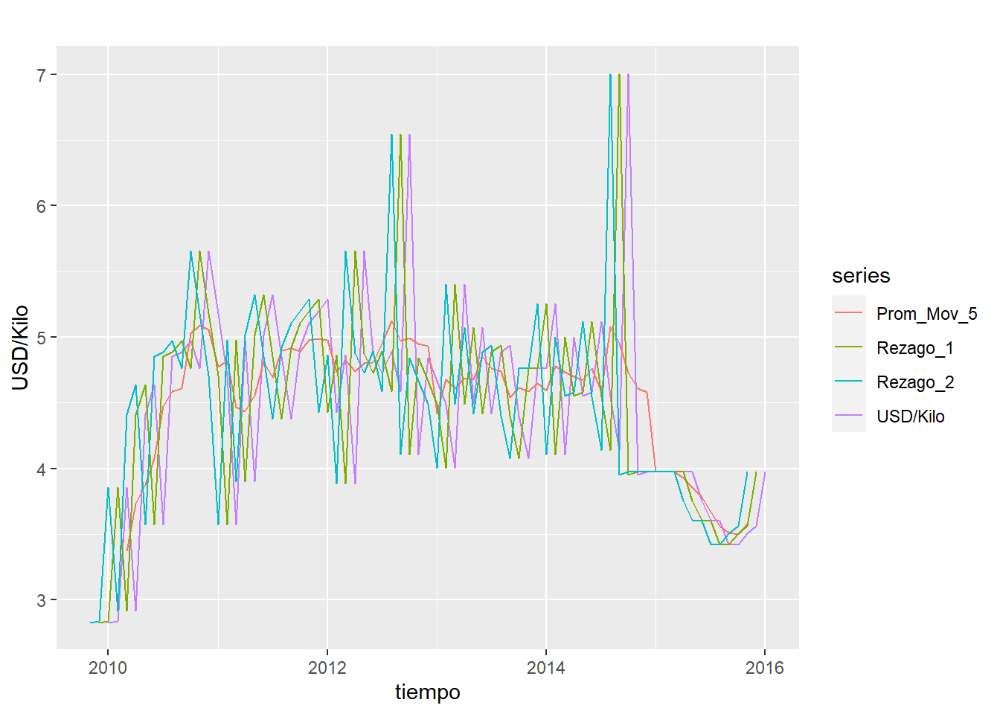
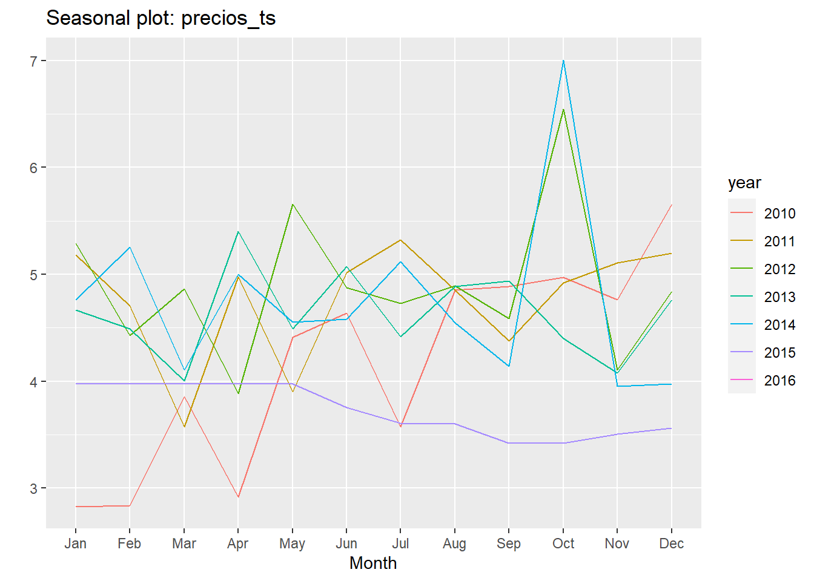
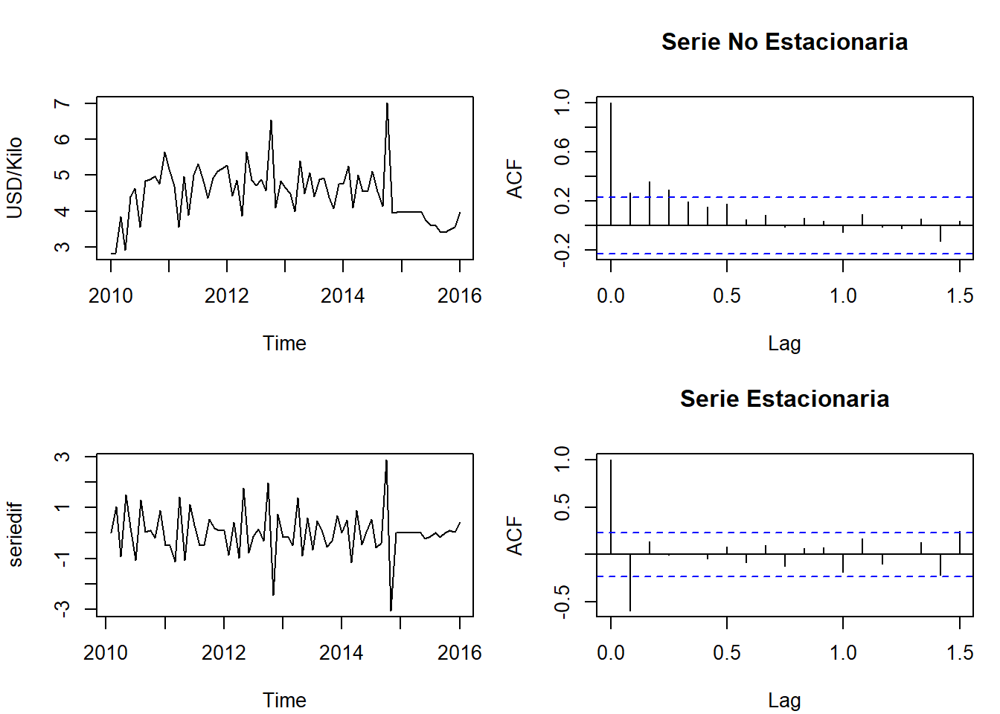

Data
2024-05-04
Chapter 1 Unidad 2
Actividad 2
## Warning: package 'openxlsx' was built under R version 4.2.3Selección de datos
Se realiza analisis de la informacion de los diferente importadores de pesticidas, se encuentran diversas empresas importadoras y con diversos componentes o prodcutos a importar. al evaluar se identifica que la empresa TRIADA EMA S.A. SUCURSAL COLOMBIA importa un producto llamado Cosmo-Oil que hace parte del grupo de insecticidas, se tienen registros desde el 2010 al 2016, para un total de 73 registros.
## Fecha Año Mes Año-mes
## Length:73 Min. :2010 Length:73 Length:73
## Class :character 1st Qu.:2011 Class :character Class :character
## Mode :character Median :2013 Mode :character Mode :character
## Mean :2013
## 3rd Qu.:2014
## Max. :2016
## FECHA_PRESENTACION VALOR_FOB_USD PESTICIDA
## Min. :40210 Min. :2.828 Length:73
## 1st Qu.:40756 1st Qu.:3.977 Class :character
## Median :41306 Median :4.554 Mode :character
## Mean :41304 Mean :4.484
## 3rd Qu.:41852 3rd Qu.:4.922
## Max. :42401 Max. :7.006
De total de los datos se seleccionan los campos “Fecha_Presentación” y “Valor_FOB_USD”, este ultimo corresponde al precio por kilo del insecticida.
Al importar los datos de excel se requiere organizarlos en orden ascendente de acuerdo a la fecha.
## Warning: package 'dplyr' was built under R version 4.2.3##
## Attaching package: 'dplyr'## The following objects are masked from 'package:stats':
##
## filter, lag## The following objects are masked from 'package:base':
##
## intersect, setdiff, setequal, union## Warning: package 'zoo' was built under R version 4.2.3##
## Attaching package: 'zoo'## The following objects are masked from 'package:base':
##
## as.Date, as.Date.numeric## Warning: package 'forecast' was built under R version 4.2.3## Registered S3 method overwritten by 'quantmod':
## method from
## as.zoo.data.frame zooMedia Movil
Para realizar analisìs de tendencia se realiza un promedio movil con k=5 de la variable Valor_FOB_USD y se crea un data set llamado prom_mov.
## Time Series:
## Start = 1
## End = 73
## Frequency = 1
## [1] NA NA 3.368692 3.730450 3.877812 4.077921 4.471656 4.583752
## [9] 4.608738 5.025404 5.090295 5.054085 4.774383 4.816900 4.465862 4.432927
## [17] 4.557135 4.813064 4.693529 4.897979 4.916061 4.890391 4.977916 4.988399
## [25] 4.976256 4.732260 4.823816 4.741042 4.800733 4.807475 4.947747 5.126318
## [33] 4.972514 4.994742 4.948585 4.929106 4.420741 4.679595 4.609523 4.690951
## [41] 4.676087 4.852745 4.759908 4.741657 4.542612 4.612007 4.586572 4.650829
## [49] 4.592363 4.777410 4.735880 4.699770 4.671968 4.760845 4.588653 5.079075
## [57] 4.953583 4.725299 4.610795 4.578098 3.972173 3.976583 3.976583 3.932018
## [65] 3.857693 3.782313 3.671012 3.559557 3.510061 3.500804 3.576183 NA
## [73] NA
Los datos que son parte del analisis de serie de tiempos (Cosmo_oil) se transforma en serie de tiempo, iniciando desde el años 2010 y estos estas distribuidos de manera mensual.
Para tener los datos con solo la serie de tiempo y el valor en dolares del kilo de insecticida, se elimina el campo fecha que viene del archivo original.
## Jan Feb Mar Apr May Jun Jul Aug
## 2010 2.828185 2.834620 3.854530 2.916667 4.409457 4.636978 3.571429 4.855076
## 2011 5.179527 4.704291 3.571429 4.974490 3.899573 5.014854 5.325329 4.851072
## 2012 5.288699 4.429228 4.861111 3.885281 5.654762 4.874827 4.727683 4.894822
## 2013 4.664036 4.489247 4.005792 5.400073 4.488467 5.071175 4.414930 4.889079
## 2014 4.761905 5.257170 4.104882 5.001191 4.554254 4.581352 5.118161 4.549266
## 2015 3.976744 3.976744 3.976744 3.975938 3.976744 3.753920 3.605116 3.599848
## 2016 3.976744
## Sep Oct Nov Dec
## 2010 4.885341 4.969938 4.761905 5.654762
## 2011 4.376815 4.921825 5.105262 5.196981
## 2012 4.586640 6.547619 4.105804 4.838826
## 2013 4.935887 4.397211 4.075954 4.761905
## 2014 4.140230 7.006366 3.953889 3.976744
## 2015 3.419432 3.419467 3.506439 3.558834
## 2016#install.packages("tidyverse")
#install.packages("forecast")
#install.packages("purrr")
library(purrr)## Warning: package 'purrr' was built under R version 4.2.3## Warning: package 'tidyverse' was built under R version 4.2.3## Warning: package 'ggplot2' was built under R version 4.2.3## Warning: package 'tibble' was built under R version 4.2.3## Warning: package 'lubridate' was built under R version 4.2.3## ── Attaching core tidyverse packages ──────────────────────── tidyverse 2.0.0 ──
## ✔ forcats 1.0.0 ✔ stringr 1.5.0
## ✔ ggplot2 3.4.3 ✔ tibble 3.2.1
## ✔ lubridate 1.9.3 ✔ tidyr 1.3.0
## ✔ readr 2.1.4
## ── Conflicts ────────────────────────────────────────── tidyverse_conflicts() ──
## ✖ dplyr::filter() masks stats::filter()
## ✖ dplyr::lag() masks stats::lag()
## ℹ Use the conflicted package (<http://conflicted.r-lib.org/>) to force all conflicts to become errorsLa secuencia de promedio movil se convierte en serie de tiempo usando la instrucciòn “ts”
## Jan Feb Mar Apr May Jun Jul Aug
## 2010 NA NA 3.368692 3.730450 3.877812 4.077921 4.471656 4.583752
## 2011 4.774383 4.816900 4.465862 4.432927 4.557135 4.813064 4.693529 4.897979
## 2012 4.976256 4.732260 4.823816 4.741042 4.800733 4.807475 4.947747 5.126318
## 2013 4.420741 4.679595 4.609523 4.690951 4.676087 4.852745 4.759908 4.741657
## 2014 4.592363 4.777410 4.735880 4.699770 4.671968 4.760845 4.588653 5.079075
## 2015 3.972173 3.976583 3.976583 3.932018 3.857693 3.782313 3.671012 3.559557
## 2016 NA
## Sep Oct Nov Dec
## 2010 4.608738 5.025404 5.090295 5.054085
## 2011 4.916061 4.890391 4.977916 4.988399
## 2012 4.972514 4.994742 4.948585 4.929106
## 2013 4.542612 4.612007 4.586572 4.650829
## 2014 4.953583 4.725299 4.610795 4.578098
## 2015 3.510061 3.500804 3.576183 NA
## 2016## Warning: package 'fpp2' was built under R version 4.2.3## ── Attaching packages ────────────────────────────────────────────── fpp2 2.5 ──## ✔ fma 2.5 ✔ expsmooth 2.3## Warning: package 'fma' was built under R version 4.2.3## Warning: package 'expsmooth' was built under R version 4.2.3## ## Warning: package 'fpp' was built under R version 4.2.3## Loading required package: lmtest## Warning: package 'lmtest' was built under R version 4.2.3## Loading required package: tseries## Warning: package 'tseries' was built under R version 4.2.3##
## Attaching package: 'fpp'## The following objects are masked from 'package:fpp2':
##
## ausair, ausbeer, austa, austourists, debitcards, departures,
## elecequip, euretail, guinearice, oil, sunspotarea, usmelecautoplot(precios_ts, series="USD/Kilo") +
autolayer(preciosMV_ts,series = "Prom_Mov_5") + ylab("USD/Kilo")+ xlab("tiempo")## Warning: Removed 4 rows containing missing values (`geom_line()`).
serie_rezago_1 <- stats::lag(precios_ts, k=1)
serie_rezago_2 <- stats::lag(precios_ts, k=2)
serie_rezago_1## Jan Feb Mar Apr May Jun Jul Aug
## 2009
## 2010 2.834620 3.854530 2.916667 4.409457 4.636978 3.571429 4.855076 4.885341
## 2011 4.704291 3.571429 4.974490 3.899573 5.014854 5.325329 4.851072 4.376815
## 2012 4.429228 4.861111 3.885281 5.654762 4.874827 4.727683 4.894822 4.586640
## 2013 4.489247 4.005792 5.400073 4.488467 5.071175 4.414930 4.889079 4.935887
## 2014 5.257170 4.104882 5.001191 4.554254 4.581352 5.118161 4.549266 4.140230
## 2015 3.976744 3.976744 3.975938 3.976744 3.753920 3.605116 3.599848 3.419432
## Sep Oct Nov Dec
## 2009 2.828185
## 2010 4.969938 4.761905 5.654762 5.179527
## 2011 4.921825 5.105262 5.196981 5.288699
## 2012 6.547619 4.105804 4.838826 4.664036
## 2013 4.397211 4.075954 4.761905 4.761905
## 2014 7.006366 3.953889 3.976744 3.976744
## 2015 3.419467 3.506439 3.558834 3.976744## Jan Feb Mar Apr May Jun Jul Aug
## 2009
## 2010 3.854530 2.916667 4.409457 4.636978 3.571429 4.855076 4.885341 4.969938
## 2011 3.571429 4.974490 3.899573 5.014854 5.325329 4.851072 4.376815 4.921825
## 2012 4.861111 3.885281 5.654762 4.874827 4.727683 4.894822 4.586640 6.547619
## 2013 4.005792 5.400073 4.488467 5.071175 4.414930 4.889079 4.935887 4.397211
## 2014 4.104882 5.001191 4.554254 4.581352 5.118161 4.549266 4.140230 7.006366
## 2015 3.976744 3.975938 3.976744 3.753920 3.605116 3.599848 3.419432 3.419467
## Sep Oct Nov Dec
## 2009 2.828185 2.834620
## 2010 4.761905 5.654762 5.179527 4.704291
## 2011 5.105262 5.196981 5.288699 4.429228
## 2012 4.105804 4.838826 4.664036 4.489247
## 2013 4.075954 4.761905 4.761905 5.257170
## 2014 3.953889 3.976744 3.976744 3.976744
## 2015 3.506439 3.558834 3.976744Tendencia
Realizando una evaluaciòn de la grafica anterior se observa:
- Al finalizar el año el precio del insecticida tiende a subir, lo cual puede ser una estacionalidad en los datos.
- Al finalizar el 2015 el precio tiende a bajar
- Se observa un incremento al finalizar el 2011
- Entre el 2011 y 2025 se tiene valores similares
autoplot(precios_ts, series="USD/Kilo") + autolayer(preciosMV_ts,series = "Prom_Mov_5") + autolayer(serie_rezago_1, series="Rezago_1") + autolayer(serie_rezago_2, series="Rezago_2")+ ylab("USD/Kilo")+ xlab("tiempo")## Warning: Removed 4 rows containing missing values (`geom_line()`).
Actividad 3
Se debe documentar la descomposiciòn, la estacinariedad y la diferenciaciòn
Descomposiòn
Se realiza grafica de descomposicion de:
- Tendencia.
- Estacionalidad
- Residuo
## Installing package into 'C:/Users/ediss/AppData/Local/R/win-library/4.2'
## (as 'lib' is unspecified)## package 'ggfortify' successfully unpacked and MD5 sums checked
##
## The downloaded binary packages are in
## C:\Users\ediss\AppData\Local\Temp\RtmpiUpfyg\downloaded_packages## Warning: package 'ggfortify' was built under R version 4.2.3## Registered S3 methods overwritten by 'ggfortify':
## method from
## autoplot.Arima forecast
## autoplot.acf forecast
## autoplot.ar forecast
## autoplot.bats forecast
## autoplot.decomposed.ts forecast
## autoplot.ets forecast
## autoplot.forecast forecast
## autoplot.stl forecast
## autoplot.ts forecast
## fitted.ar forecast
## fortify.ts forecast
## residuals.ar forecastautoplot(fit)+labs(title = "Descomposición de la serie de tiempo",
x="tiempo",
y="Valor USD/Kilo",
colour="gears")+
theme_bw()## Warning: Removed 24 rows containing missing values (`geom_line()`).Se observa que hay tendecia al inicio y final de la serie. Con el fin de evaluar la estacionalidad se debe realizar grafica y prueba de Dickey-Fuller
Estacionalidad
Prueba de Dickey- Fuller
##
## Augmented Dickey-Fuller Test
##
## data: precios_ts
## Dickey-Fuller = -3.2774, Lag order = 4, p-value = 0.08223
## alternative hypothesis: stationary
Dado que el valor p (0.08223) es mayor que un nivel de significancia común como 0.05, no hay suficiente evidencia para rechazar la hipótesis nula de que la serie de tiempo tiene raíces unitarias, lo que sugiere que la serie de tiempo es no estacionaria. Sin embargo, es importante tener en cuenta que el valor p está cerca del nivel de significancia, por lo que podría haber una tendencia hacia la estacionariedad, como lo menciona el resultado “stationary”
Ante este resultado la serie de tiempo se considerarà no estacionaria
Con el fin de identificar la necesidad de validar la necesidad de realizar un ajuste de estacionalidad se hace la prueba ndiffs. el resultado es uno, por lo tanto se realizarà una transformaciòn## [1] 1al realizar un proceso de diferenciaciòn se valida, que ya no es necesario realizar una nueva
## [1] 0
Se tiene como resultado una serie de tiempo estacional y se puede apreciar al comparar los graficos antes y despues del ajuste diferenciado.
par(mfrow=c(2,2),mar=c(4,4,4,1)+.1)
plot(precios_ts,ylab="USD/Kilo")
acf(precios_ts,main="Serie No Estacionaria")
plot(seriedif)
acf(seriedif,main="Serie Estacionaria")
## Fecha Año Mes Año-mes
## Length:73 Min. :2010 Length:73 Length:73
## Class :character 1st Qu.:2011 Class :character Class :character
## Mode :character Median :2013 Mode :character Mode :character
## Mean :2013
## 3rd Qu.:2014
## Max. :2016
## FECHA_PRESENTACION VALOR_FOB_USD PESTICIDA
## Min. :40210 Min. :2.828 Length:73
## 1st Qu.:40756 1st Qu.:3.977 Class :character
## Median :41306 Median :4.554 Mode :character
## Mean :41304 Mean :4.484
## 3rd Qu.:41852 3rd Qu.:4.922
## Max. :42401 Max. :7.006